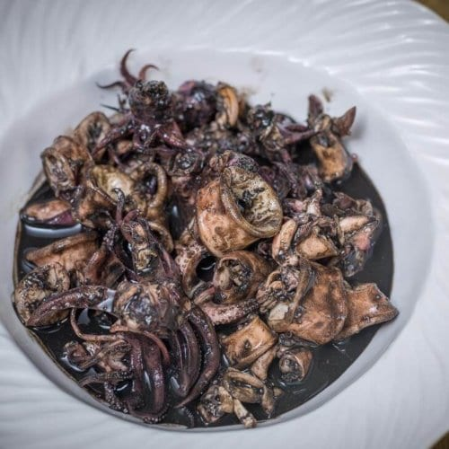

Adobong Pusit

Description
It is a dish dominated by squid using the famous approach to adobo. It is easy to cook!
Ingredients
- 2 1/2 pounds squid, cleaned
- 1/2 cup white vinegar
- 1/2 cup water
- salt and ground black pepper to taste
- 2 tablespoons olive oil
- 1 small onion, minced
- 2 cloves garlic, minced
- 1 tomato, chopped
- 1 tablespoon soy sauce
Steps
- Combine the squid, vinegar, and water in a small pot over medium heat; season with salt and pepper. Cook for 10 minutes.
- Meanwhile, heat the olive oil in a saucepan over medium heat; cook and stir the onion and garlic in the hot oil until softened, 5 to 7 minutes. Stir the tomato and soy sauce into the mixture. Pour the squid mixture into the saucepan and bring to a simmer; cook together another 20 minutes.
Return to homepage